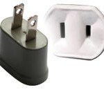
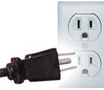
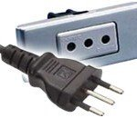
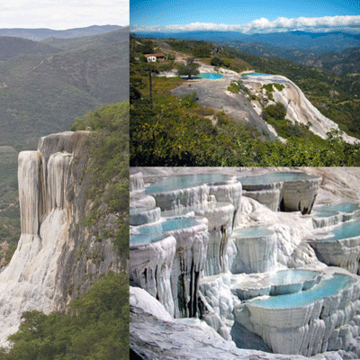

Exciting isn't it? In 2018, we are embarking on a whistle–stop two–week holiday to 2 countries bordering on the Caribbean: Mexico and Cuba. These are both countries on my personal bucket–list of places to go to so I am excited to be doing this!
I decided to produce this eBook to both practice what I already knew about creating these things and to make sure I recorded somewhere all of the stuff that I had found out and needed to pass on or remember. Who knows – maybe this can act as a template for future holiday stuff?
This eBook is divided into 3 main sections, namely:
If I think of any other stuff I'll put it into appendices at the end. So, without further ado, let's crack on!
Well before we start our trip, there are a few things to think about and do. I have split these up as follows:
I have also included as an Appendix what I envisage packing for the trip (excluding clothing - I am sure you can make up your own minds about clothing!).
Both Mexico and Cuba have coastline with the Caribbean. The Caribbean area is warm for most of the year (the Gulf Stream kick starts here) so temperatures are generally pleasant, but it is humid at times. Additionally, this area suffers each year from a period of high hurricane probability, generally from August through to mid-November.
Taking this into account, and taking advice from the major tourist web sites, we are timing our holiday just after the hurricane season finishes and just before temperatures rise. This is also the best time to visit as it precedes the major tourist season from late December through April. We fly out of the UK on Friday 23rd November and return on Sunday 9th December.
The weather forecast for our various destinations in the week before we arrive is shown below:
| Temperature (deg C) | |||
|---|---|---|---|
| Place | High | Low | Comment |
| Oaxaca, Mexico | 20–28 | 8–13 | chance of rain on 1 day, cool at nights. |
| Merida, Mexico | 24–33 | 21–22 | chance of rain on 2 days, warm at nights. |
| Chichen Itza, Mexico | 25–32 | 19–21 | chance of rain on 4 days, warm at nights. |
| Havana, Cuba | 28–31 | 19–22 | small chance of rain on 3 days, warm at nights. |
| Trinidad, Cuba | 29–32 | 22–23 | chance of rain on 1 day, warm at nights. |
| Mexico City, Mexico | 12–23 | 3–12 | rain on 2 days, colder at nights. |
So, mostly warm but occasional nights when overnight temperature is cold. Take decent overnight gear and a light waterproof for showers is my best advice. Layers will be the order of the day. Most days SHOULD be OK for sandals though.
Mexico is a country of approx. 130 million people and nearly 2 million square kilometres in size; Cuba is much smaller: approx. 12 million people and 110,000 square kilometrees in size. The UK lies between these two, having a population of approaching 70 million people crammed into nearly 250,000 square kilometres of land mass.
We will be visitng 3 regions in Mexico:
Our visit to Cuba will only take in two areas:
Do check with your GP about what innoculations they advise for your personal circumstances for this trip. They will normally check for whether you are up to date with vaccines for cholera, typhoid, Hepatitis A and Tetanus – I had to have a tetanus jab and a Hepatitis A one as well (because I only had a combined Hep A + B jab when we travelled to Vietnam and Cambodia which only lasts for a short time).
Make sure and get them to bring your vaccination record card up to date an store it somewhere safe.
Hampton GP surgery also gave me two web sites to check:
I did ask about rabies and malaria. Alhough both countries are tropical, malaria risk is classed as Low and Hampton GP's are not recommending a course of malaria tablets for our visit. The risk of rabies is roughly the same for Cuba/Mexico as it was for Vietnam/Cambodia. The rabies jab does not offer full protection anyway; it just delays the progress of rabies if you have been bitten until you can get to some proper medical facilities. That being the case, we may do the same as we did for Vietnam/Cambodia – not have the rabies jab – and remain careful while on holiday around animals.
The tour company did mention about having an up–to–date Yellow Fever vaccination record or you might not get back into the UK but the Hampton Surgey dismissed that - see what your own GP's say where you are.
Mexico and Cuba are in different time zones:
We are travelling a significant distance during this holiday, both by air and by road. The table below shows the main travelling and what the distances involved are for each major trip.
| Air Journey | Distance (miles) |
|---|---|
|
London to Oaxaca via Mexico City Flight AM0008 from London Heathrow (Terminal 4) to Mexico City Depart: 2230, Arrive: 0420 on 24th November Flight AM2046 from Mexico City to Oaxaca Depart: 0605, Arrive: 0720 |
5819 |
| Oaxaca to Merida via Mexico CityMonday 26th November Flight AM2047 from Oaxaca to Mexico City Depart: 0810, Arrive: 0925 Flight AM0515 from Mexico City to Merida Depart: 1135, Arrive: 1328 |
1101 |
| Chichen Itza to Havana via Cancun Flight AM0449 from Cancun to Havana Depart: 1354, Arrive: 1512 |
440 |
| Havana to Mexico City Flight AM0452 from Havana to Mexico City Depart: 1505, Arrive: 1720 |
1108 |
| Mexico City to London Flight AM0007 from Mexico City to London Heathrow (Terminal 4) Depart: 2340, Arrive: 1555 (on Sunday 9th December) |
5532 |
| TOTAL air miles | 14000 |
| TOTAL air miles | 14000 |
N.B.
Flying on AeroMexico is apparently easier than other airlines because you arrive and depart from the same terminal (terminal 2). We will check with AeroMexico in London when we check in or update this advice if there's time before we leave.
And also scheduled journeys by road when we are abroad – excluding airport transfers and any we do ourselves:
| Road Journey | Distance (miles) |
|---|---|
| Oaxaca to Monte Alban and Hierve el Agua |
98 (circular) |
| Merida to Chichen Itza | 74 |
| Chichen Itza Mayan tour with cenotes |
98 (circular) |
| Chichen Itza to Cancun Airport | 126 |
| Havana to Trinidad and return via Santa Clara |
392 |
| Teotihuacan pyramids and Guadalupe shrine | 70 (circular) |
| Puebla, Tonantzintla and Cholula | 182 (circular) |
It is worth noting that a Cuban tourist card is compulsory for entering Cuba. We have been issued with these for each of us from Journey Latin America. We will need to produce the document at customs, as well as valid travel insurance to be allowed to enter. Without them both, we risk being turned away after landing.
Lesley and I will each have a "travel pack" with printed copies of our travel documentation in plus other stuff to do with the trip. We will also have our foreign currency split up between us.
Both Mexico and Cuba have the peso as their unit of currency but they are separate currencies with separate exchange rates, similar to US and Canadian dollars in that respect.
Mexico has a more developed ATM and credit-card capability. Not sure how useful the FairFX card will be – need to check with them. You are recommended to let your bank know that you will be using your card(s) in these countries before you leave.
Current exchange rates (as at Friday 17 August) are:
N.B. It will not be possible to buy Cuban pesos outside of Cuba. We will have to take sufficient UK/US cash to use to buy some when we get there.
Credit cards (and pre-paid credit cards such as FairFX) are widely accepted throughout Mexico. Cuba is different. Cash is best as you will be charged to use credit cards (both at the airport/hotel and at ATMs). Some shops and restaurants may accept cards but it depends on electricity as to whether it works!
Tipping is expected in both Mexico and Cuba, so expect to do this for most things except straight shops, market stalls etc. It is often more useful to give the tip in local currency; however in Cuba locals may not legally be able to use CUC's (Cuban tourist pesos). Rule of thumb guidelines (but only if you are happy with the service)may be:
Approximately 1 litre of spirits may be brought in from Cuba to Mexico per person.
A popular item that travellers buy at duty-free in Cuba is the famous Havana Rum. However, many travellers have also reported that they then have it confiscated from them when going through a connecting airport such as LA or Madrid. This is because it is compulsory for any alcohol to be sealed in a duty-free clear plastic bag with the receipt inside it. Duty free officials in Cuba are lax about putting receipts INSIDE the clear plastic bags so watch out. Without this, it means that going through check in at the connecting airport the customs officials will then be legally obligated to throw it away or alternatively, check it in as luggage at an extra cost.
May be better to purchase within the country and pack safely in the suitcase, not in carry-on bags?
In Mexico, accessing hotel wifi is easy and generally complientary. This extends to many coffee bars and restaurants. So we should try and confine our Whatsapp use to wifi connections unless in an emergency. Don't forget to turn off mobile data when not connected to wifi!. Cuba is a different story when it comes to phones and internet though! Prior to 2015, there wasn’t really any internet connection in Cuba although things have improved a bit since then. The national phone company, ETECSA, have created hotspots so you just buy a prepaid internet card to access the internet. Connection is slow but possible and you can get the internet cards at most hotels as well as ETECSA shops.
We may or may not be able to print our boarding cards for flights when we are away. Advice from Journey Latin America about this is: "Hotels sometimes offer printing although not always and often for a charge. (They) would advise downloading the Aeromexico app to check in online. All flights are confirmed with seats booked though so you should be fine if you’re unable to check in online."
Both Mexico and Cuba have different electricty supply and plug sockets to the UK. In Mexico the power sockets are of type A and B. The standard voltage is 127 V and the standard frequency is 60 Hz. In Cuba the power sockets are of type A, B, C and L. The standard voltage is 110 / 220 V and the standard frequency is 60 Hz. Pictures of the various socket types are shown below.
|  |  |
| Type A Socket | Type B Socket |
|  | |
| Type C Socket | Type L Socket |
So we will need travel adapters and (maybe) voltage adapters as well so we can have our 4-way blocks plugged in at our various accommodations.
I have grouped everything below by each of our accommodation destinations and then, each day of the trip is listed in its own mini–section. Where I know these details, I've tried to include times for any travelling we do on the day and the main sights we are seeing. The itinerary has been developed in conjunction with Journey Latin America and the contact details for them are included at the end of the book.
The long–haul travel days are also mentioned in the Before We Go and Coming Home sections of this book.
Our flight from London Heathrow is AeroMexico flight number AM0008 which departs at 2340 from London HeathRow. Check–in must be done by 2140. Each person can have one suitcase (for placing in the hold – maximum 23kg) and one carry–on bag / backpack – normal for long–haul flights.
For coach travel, our coach leaves Birmingham Airport at 14:25 and is scheduled to arrive at Heathrow Terminal 4 at 17:35. However, we re travelling by road on Friday afternoon, including during the peak, so we could be later than this arriving at Heathrow. In any event, this should give us time to meet up, check-in and have a decent evening meal before boarding.
We arrive in Mexico City airport at about 0420 in the morning and have to catch an internal flight to Oaxaca at 0605 (our bags transfer automatically as advised by Journey Latin America). We then arrive in Oaxaca airport at about 0720 and will be able to check–in to our hotel on arrival.
We are staying in Oaxaca for two nights at the Catrina de Alcala hotel
Afternoon: Half–day private excursion for Oaxacan street food and Mezcal tasting. Need to stay awake for this one as Oaxaca is meant to be one of the culinary highs of Mexico.
Full–day private excursion to Monte Alban and Hierve el Agua. Monte Alban are our first experience of Mayan ruins; Hierve el Agua may allow us to bathe in one of the pools if we want (depends on weather and temperature of the water, I suggest!) and the ride to/from Hierve el Agua is meant to be "interesting"!
We are staying for two nights at the Hotel Boutique Casa Lucia in Merida.
Arrive at Merida airport at approx. 1328. Afternoon at leisure after hotel check–in. Possible things to do this afternoon include:
Merida city tour - two to three hour excursion (No start time specified). Need to know this from guide or hotel the day beforehand.
We are staying for two nights at the Mayaland and Bunglaows Hotel in Chichen Itza.
N.B. This is an early start day, leaving at about 0830. Be up early if you want any breakfast!
Two and a half hour road trip to Chichen Itza from Merida, arriving there at around 11am (so leave hotel at about 0830). Private air–conditioned vehicle – lunch included during or before the half-day excursion to Chichen Itza ruins. Chichen Itza is the most fanmous (with tourists) Mayan ruin enclosure in Mexico so expect crowds.
Ek–Balam & Valladolid with Ik Kil & Samula cenotes. Full day private excursion.
If we want to, we should be able to climb the main pyramid at Ek Balam and get views all around – we won't be able to do this at Chichn Itza; Ik Kil and Samula are two of the most photogenic cenotes in the Yucatan and we may be able to briefly swim at one or both :-) bring your swimming gear! They are also two of the most popular, so expect crowds/queues.
Our hotel is close enough to the main Chichen Itza ruins if we want to revisit this evening (depending on what time we get back).
N.B. This is a VERY early start day, leaving at about 0800. Again, be up early if you want any breakfast!
Private transfer to Cancun airport leaving at about 0800. Flight from Cancun at 1354 to Havana, arriving at 1512. Transfer to Hotel Inglaterra for 3 nights.
We are staying for three nights at the Hotel Inglaterra in Havana Old Town. Rest of the first afternon and evening at leisure. There appear to be a number of coffee shops in the vicinity of the hotel :-)
NOTE: We have been warned that accommodation in Cuba is not likely to be as modern or well provided for as in Mexico but it will be clean and safe. We may have issues with wifi in the hotel so if all else fails see if we can get reception in a local coffee shop :-) What a hardship!
Half–day walking tour of Old Havana - prepare to start early! Most cafes and coffee houses are in the Old Town so smile!
This afternoon we join a shared excursion to the Rum Museum - this is a one hour tour shared with other holidaymakers. Various start times in the day. We need to check with our local guide when this starts and from where.
Rest of the day and evening at leisure - so, walking :-)
Day at leisure in Havana so we need to think of possibilities for the day. Maybe:
Travel by road via the Che Guevara Santa Clara area, photos. Museum not open on Mondays.
After our journey, we check in to our Trinidad homestay and then have a Trinidad colonial city walking tour – a half–day private excursion with lunch inlcuded. We will be staying for two nights at the Casa Luis XVIII Homestay in Trinidad. Our evening meal on this first day here at the homestay is included - maybe chance to meet some locals?
We have this as a day at leisure in Trinidad to do our own thing:
N.B. This is a long travelling day, with quite an early start. We retrace our road trip back from Trinidad to Havana (5+ hours) and then fly from Havana to Mexico City. Once again, be up early if you want any breakfast!
We will be staying for three nights at theHistorico Central in Mexico City. Remainder of this day at leisure.
Full day shared excursion to the Teotihuacan pyramids and Guadalupe shrine. No idea about lunch - maybe buy something at one of the places?
Full day private excursion to Puebla, Tonantzintla and Cholula. From Cholula, we should get magnificient views of Mexico's largest volcano – Popacatapetl but we probably will not have time to try and climb it :-(
Our homeward lomg–haul flight today from Mexico City is AeroMexico flight number AM0007 which departs at 2340. Must do the online check–in for the long haul flight before we leave the hotel. Baggage check–in must be done by 2140. As for the outbound long–haul flight, each person can have one suitcase (for placing in the hold – maximum 23kg) and one carry–on bag / backpack – normal for long–haul flights.
We have a late checkout from our hotel today (around 6pm) so we retain the use of the room up until tea time - good news for freshening up for the long journey home! We will be picked up from the hotel by our airport transfer at any time betyween 7.30 and 8.00 pm
We arrive back in the UK at London HeathRow at approx. 3.50pm.
Arriving at Heathrow at about 3.50pm, Terminal 4, we will then have to catch our onward transport – Sophie to Bedford and Em coming with us on the coach to Hampton.
Our coach from Heathrow Terminal 4 to Birmingham Airport leaves at 17:40 giving us over 90 minutes to clear baggage control and customs after landing. We will probably need to pick up milk as well at some point. We are due to arrive back at Birmingham Airport at 20:30 so we should be home for 21:00 if we are lucky!
For what it's worth, my personal holiday essentials list is included below. Adapt for your own needs, of course!
| Name on Passport | Passport No. | Expiry Date |
|---|---|---|
| John Brinley Cable | 534663386 | 1 May 2026 |
| Lesley Anne Cable | 464103862 | 19 June 2019 |
| Sophie Vinetta Cable | 465469170 | 22 August 2020 |
| Emily Beatrice Cable | 527280869 | 6 September 2025 |
Don't forget to weigh case – safe maximum is 20KG. Camera (in backpack) is hand luggage
Note for neighbours
N.B.
* optional – depends on the holiday
** may purchase in Duty Free at airport
*? may be packed with family toiletry bag
The agents helping us plan the holiday this time are: Journey Latin America. Their contact details are shown below.
Contact Details:
As part of the final itinerary confirmation, we have been given access to the information via an app that can be downloaded from Apple App Store. The app to look for is Vamoos. Ideally, download this to an iPad as the displays are quite big, but it should still work to some degree on an iPhone.
Aftre you have downloaded the app, start it up and you will then need to sign–in to the app to get to our holiday details. Our sign–in details are:
| Username: | JLA |
| Password: | 358130CAB |
The app will offer you the opportunity to download some maps - not OS maps but OK. When connected to wifi, you should do this so that things are still accessible on-the-go.
| Name of Hotel | Wifi? | Air Con? | Other |
|---|---|---|---|
| La Catrina de Alcala, Oaxaca 2 nights |
Y | Y | Pool? |
| La Hotel Casa Lucia, Merida 2 nights |
Y | Y | Pool |
| Hotel & Bungalows, Mayaland, Chichen Itza 2 nights |
Y | Y | Pool |
| Hotel Inglaterra, Havana 3 Nights |
Y | Y | Roof Bar |
| Trinidad Homestay, Trinidad, Cuba 2 nights |
? | ? | |
| Historico Central, Mexico City 3 nights |
Y | Y |
While we are away, we stil stay in 6 overnight locations. These are listed above along with answers to facilities questions such as I can find on the internet. Click on any of the hotel names to be taken to any available Trip Advisor reviews about them along with photo galleries if they have them.